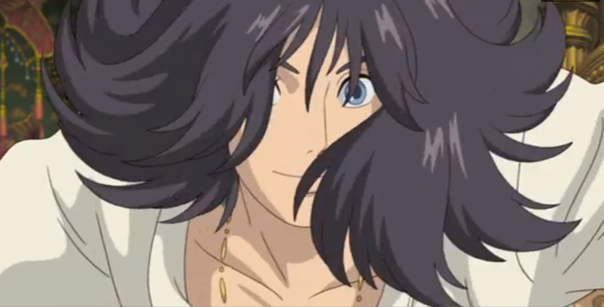

Le château ambulant, ou ハウルの動く城 Hauru no u~goku shiro~ est un film d'animation des studios ghibli, réalisé et dessiné par le très célèbre Hayao Miyazaki, qui a également travaillé sur
Pour n'en citer que quelques uns.Le château ambulant, ou ハウルの動く城 Hauru no u~goku shiro~ est un film d'animation des studios ghibli, réalisé et dessiné par le très célèbre Hayao Miyazaki, qui a également travaillé sur
Pour n'en citer que quelques uns.Le film est basé sur une oeuvre de Diana Wynne Jones une écrivaine de la fin du XXe au début du XXIe siècle. Dans le film d'animation tout autant que dans l'oeuvre littéraire qui l'a inspiré La narration nous fait voyager dans un univers fantastique
Une jeune femme de dix-huit ans répondant au nom de sophie et travaillant dans le magasin de châpelier de son défunt père croise le chemin d'un étrange personnage nommé Hauru, un magicien aux traits charmeurs. La sorcière des landes, éprise de Hauru, et se méprenant sur la teneur de la relation entre sophie et celui ci lance une malédiction à la jeune fille Sophie prends 72 années de plus et se retrouve avec une apparence de grand-mère, incapable d'expliquer la situation à ses proches Notre héroïne comprenant peu à peu la situation dans laquelle elle se trouve décide de se rendre dans les montagnes où parait-il Un mystérieux et puissant magicien pourrait être capable de rompre le mauvais sort... En chemin, c'est dans une véritable épopée que va s'embarquer Sophie entre rencontre avec un mystérieux épouvantail enchantée et un feu vivant.
Le château ambulant est une épopée poétique, sublime autant au niveau visuel que musical. Je suis fasciné par la direction artistique qui rajoute de la profondeur et de l'intensité au fil de la trame narrative j'ai par exemple adoré la façon dont les traits accompagnent le mouvement avec le personnage de Hauru
Pour ce qui est de l'histoire:
On est emportée le temps d'un instant dans cet univers de magie Mais le talent d'Hayao Myiazaki ne s'arrête pas seulement là, le monde du château ambulant est également teinté par l'ombre de la guerre, Un conflit entre les royaumes de ce monde demande l'implication des sorciers. Le film, au delà de faire écho aux conflits mondiaux et à leurs impact comme les répercussions de la technologies utilisé comme arme de guerre, nous interpelle sur les raisons de chacun de répondre à l'appel du conflit ou de le fuir, d'employer les plus vils moyens en guerre comme en amourJe conseille ce film à tous, c'est une perle de l'animation qu'on peut apprécier, je le penses, à tout âge
